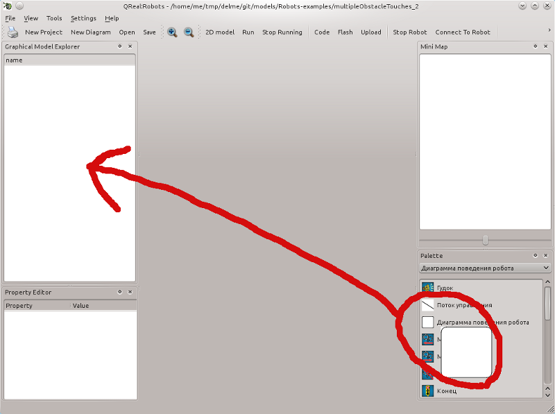
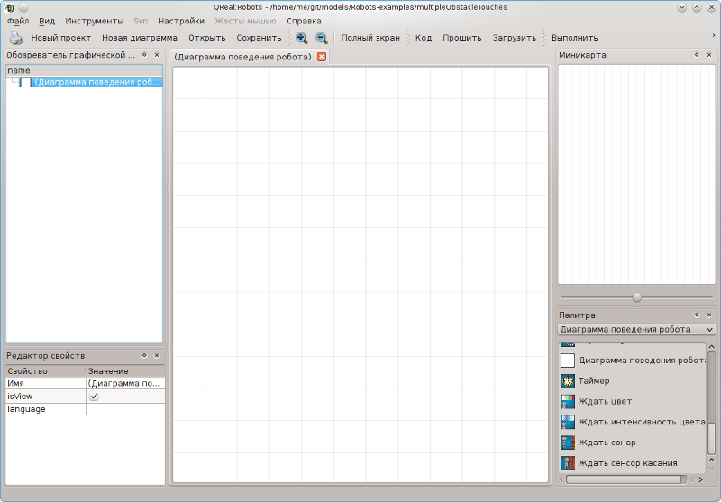
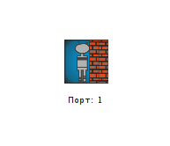
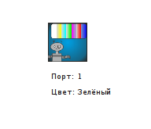
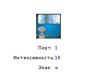
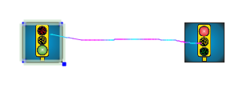
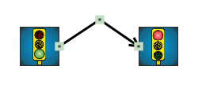
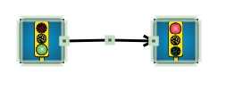
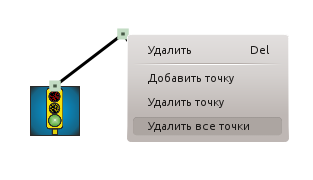
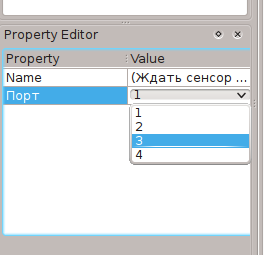

Создание программ в QReal:Robots
Программа в QReal:Robots представляется в виде последовательности блоков, соединённых связями, каждой программе соответствует отдельная диаграмма. Для того, чтобы создать новую диаграмму, нужно нажать на иконку с надписью "Диаграмма поведения робота" в палитре и, не отпуская левую кнопку мыши, перетащить ее в область обозревателя диаграмм:

В результате в обозревателе появится строка "Диаграмма поведения робота", что является названием диаграммы по умолчанию. При желании его можно сменить, выделив данный элемент в обозревателе и дважды нажав на текст имени.
Чтобы открыть диаграмму для редактирования, необходимо кликнуть на нужном элементе в обозревателе диаграмм. В случае пустой диаграммы экран приложения будет выглядеть следующим образом:

Теперь на диаграмму можно добавлять элементы и формировать из них программу управления роботом.
Блоки в QReal:Robots создаются перетаскиванием соответствующих иконок из палитры элементов на диаграмму. Рассмотрим доступные типы блоков:
Служебные блоки
| Название элемента |
Пиктограмма |
Описание |
| Начало |
 |
Начальная точка выполнения программы. На каждой диаграмме такой блок должен быть только один, в него не должно быть входящих связей, исходящая связь из этого элемента должна быть только одна. Процесс интерпретации диаграммы начинается именно с этого блока. |
| Конец |
 |
Конец программы. Если программа состоит из нескольких параллельных участков выполнения, достижение этого блока завершает этот участок. У данного блока не может быть исходящих связей. |
Функциональные блоки
| Название элемента |
Пиктограмма |
Описание |
| Моторы вперёд |
 |
Включить моторы по заданным портам с заданной мощностью. Порты задаются буквами A, B или C, разделенными запятыми. Мощность задается в процентах числом от -100 до 100, если задано отрицательное значение, мотор включается в режиме реверса. Можно также задать предел оборотов (в градусах), после которых мотор отключится (если задан 0, значение игнорируется). Так, на картинке изображена команда включения моторов на портах A и B с мощностью 100%. |
| Моторы назад |
 |
Включить моторы в режиме реверса по заданным портам с заданной мощностью. Параметры аналогичны параметрами блока "Моторы вперёд". |
| Моторы стоп |
 |
Выключить моторы по заданным портам. |
| Таймер |
 |
Ждать заданное количество времени, в миллисекундах. |
| Гудок |
 |
Проиграть на роботе звук с фиксированной частотой. Имеется один параметр — ждать ли завершения проигрывания звука или сразу же перейти к следующему блоку. Допустимые значения — true и false. |
| Играть звук |
 |
Проиграть на роботе звук с заданной частотой и длительностью. Аналогичен блоку "Гудок", но позволяет задавать параметры звука. Имеется параметр, определяющий, ждать ли завершения проигрывания звука или сразу же перейти к следующему блоку. |
| Ждать сенсор касания |
 |
Ждать, пока не сработает сенсор касания. Параметром указывается номер порта, к которому подключен сенсор касания. Допустимые значения: 1, 2, 3, 4. |
| Ждать сонар |
 |
Ждать, пока расстояние, возвращаемое ультразвуковым сенсором расстояния, не будет сравнимо с указанным в значении параметра "Расстояние" (расстояние задается в сантиметрах, от 0 до 255). Еще один парамер — номер порта, к которому подключен датчик расстояния. Также параметром указывается операция, которая будет использоваться для сравнения с введенным расстоянием. Так, при выполнении приведенного блока выполнение программы остановится до тех пор, пока значение, возвращаемое сонаром, не будет меньше, чем 40 см. |
| Ждать цвет |
 |
|
| Ждать интенсивность |
 |
|
Логические блоки
| Название элемента |
Пиктограмма |
Описание |
| Породить поток |
 |
Разделить выполнение программы на несколько потоков, которые с точки зрения программиста будут выполняться параллельно. Так, например, можно одновременно ждать срабатывания сенсора или истечения временного интервала. Блок должен иметь хотя бы две исходящие связи. |
| Функция |
 |
Посчитать значение некоего выражения. Также в данном блоке допускается определение переменных. Подробнее про синтаксис допустимых выважений параметра "Функция" см. в разделе Синтаксис выражений. |
| Условие |
 |
Разделить выполнение программы в соответствии с заданным условием. Значением параметра "Условие" является некое арифметическое выражение (подробнее см. раздел Синтаксис выражений), на основе значения которого будет осуществлен выбор дальнейшего пути выполнения диаграммы. У данного блока должны быть две исходящие связи, у одной из которых должно быть задано значение параметра "Условие" (возможные варианты — "больше 0", "меньше 0", "равно 0"). При невыполнении данного условия выполнение передается по другой связи. |
| Блок инициализации |
 |
|
| Цикл |
 |
Блок, организующий выполнение последовательности блоков несколько раз. Число повторений задается значением параметра "Итераций". Блок должен иметь две исходящие связи, одна из которых должна быть помечена значением "итерация" (то есть значение параметра "Условие" должно быть "итерация"). Другая связь, исходящая из блока "Цикл" должна оставаться непомеченной, по ней будет осуществляться переход, когда программа пройдет через блок "Цикл" указанное число раз. |
Связи между элементами в QReal:Robots обозначают направление передачи управления между блоками. Это означает, что если Вы хотите, например, чтобы вслед за включением моторов робот сразу же издал звуковой сигнал, Вам необходимо соединить эти два блока стрелкой, имеющей направление от блока включения моторов к блоку звукового сигнала:

Связи в QReal:Robots можно создавать несколькими способами. Первый подход аналогичен созданию блоков — нужно найти в палитре элементов соответствующую пиктограмму ("Поток управления") и перетащить его в нужное место диаграммы. При этом если "бросить" эту пиктограмму на уже существующий блок, то связь автоматически прикрепится к этому элементу. Если навести на связь курсор мыши, то на ее концах отобразятся серые маркеры:

Потянув за один из этих маркеров, можно управлять тем, к каким блокам присоединен тот или иной конец данной связи. Так, чтобы присоединить один из концов связи к блоку, нужно потянуть за соответствующий серый маркер и отпустить его на интересующем блоке.
Второй подход не требует перетаскивания элементов из палитры. Для того, чтобы создать связь между двумя элементами A и B, нужно навести курсор на элемент A, зажать правую кнопку мыши и провести линию до элемента B (форма линии может быть произвольной, важно, чтобы она начиналась строго на элементе A и заканчивалась на элементе B). При этом на сцене это будет отражено следующим образом (элемент A в нашем случае — это блок "Начало", B — блок "Конец"):

При отпускании правой кнопки мыши элементы A и B окажутся соединенными связью:

Третий подход — линкеры, но они у меня почему-то не работаэ, поэтому скриншотов не будет.
Связи в QReal:Robots могут быть ломаными линиям. Для того, чтобы добавить новую точку излома, нужно навести курсор мыши на точку линии связи, где хочется сделать излом, нажать левой кнопкой мыши и потянуть появившийся серый маркер:

При этом, если точку излома связи разместить так, что она и две ближайших к ней будут располагаться примерно на одной прямой (см. рисунок ниже), то это приведет к уничтожению этой точки излома и сглаживанию ломаной в этом месте:

Также удалить точку излома можно, нажав на соответствующий ей серый маркер правой кнопкой мыши и выбрав пункт выпадающего меню "Удалить точку":

При выборе пункта меню "Уменьшить" все точки изломов связи уничтожаются.
В QReal:Robots имеется несколько способов редактирования начений свойств, которые имеются у блоков и связей на диаграммах. Основным из них является использование редактора свойств (см. раздел
Интерфейс QReal:Robots). При выделении блока связи или элемента на сцене в редакторе свойств начинают отображаться все свойства текущего элемента (на рисунке представлено изображение редактора свойств блока "Моторы вперёд"):
Редактор свойств представляет собой таблицу, в которой в левой колонке отображается название свойства элемента, а в левой — его значение. Изменить значение любого свойства можно кликнув на соответствующей ячейке правой колонки и введя нужное значение. Для свойств, которые допускают только определенный набор значений (например, свойство "Порт" у блока "Ждать сенсор касания") при попытке их редактирования появится выпадающее меню, в котором нужно выбрать интересующее значение:

Помимо редактора свойств, значения свойств элементов можно редактировать прямо на диаграмме. Для этого нужно навести курсор мыши на значение нужного свойства, двойным нажатием левой кнопки мыши активировать редактирование свойства, ввести нужное значение и кликнуть в произвольное место сцены. Стоит отметить, что данный подход может служить источником ошибок, поскольку позволяет ввести произвольное текстовое значение свойства, в том числе и некорректное. Будьте осторожны.